Anel Solstício
Solitário de peito alto em ouro amarelo, diamante de 0,80 ct.
Ouro amarelo 18k · diamante 0,80 ct
R$ 18.900valor de referência
Ateliê de alta joalheria
Peças autorais em ouro 18k, desenhadas e acabadas à mão no nosso ateliê. Produção curta, pedras certificadas e uma conversa antes de cada compra.
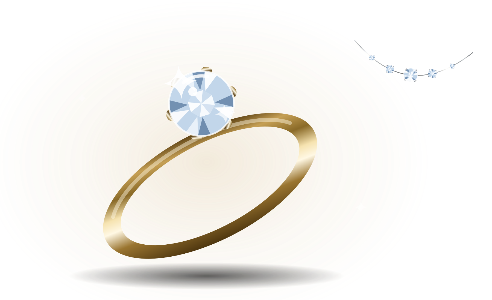
01 Coleção em destaque
Uma seleção curta do que está no ateliê agora. Todas disponíveis para prova com hora marcada.
Solitário de peito alto em ouro amarelo, diamante de 0,80 ct.
Ouro amarelo 18k · diamante 0,80 ct
R$ 18.900valor de referência
Aro cravejado em ouro branco, com pedra baixa e discreta.
Ouro branco 18k · 28 diamantes
R$ 12.400valor de referência
Safira em lapidação gota suspensa em fio de ouro amarelo.
Ouro amarelo 18k · safira 3,10 ct
R$ 24.700valor de referência
Cinco diamantes graduados sobre fio quase invisível de ouro branco.
Ouro branco 18k · 5 diamantes, 2,35 ct
R$ 41.200valor de referência
Três diamantes em degradê terminando em gota, ouro branco.
Ouro branco 18k · diamantes 1,88 ct
R$ 21.300valor de referência
Linha contínua de 26 diamantes calibrados em ouro branco.
Ouro branco 18k · 26 diamantes, 3,90 ct
R$ 32.500valor de referência
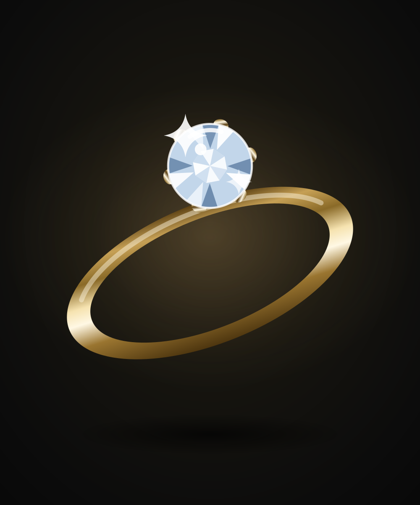
02 Anéis
O gesto mais direto da joalheria: um aro, uma pedra, uma decisão.
Solitário de peito alto em ouro amarelo, diamante de 0,80 ct.
Ouro amarelo 18k · diamante 0,80 ct
R$ 18.900valor de referência
Aro cravejado em ouro branco, com pedra baixa e discreta.
Ouro branco 18k · 28 diamantes
R$ 12.400valor de referência
Esmeralda em lapidação degrau, ombros cravejados em ouro amarelo.
Ouro amarelo 18k · esmeralda 1,60 ct
R$ 28.400valor de referência
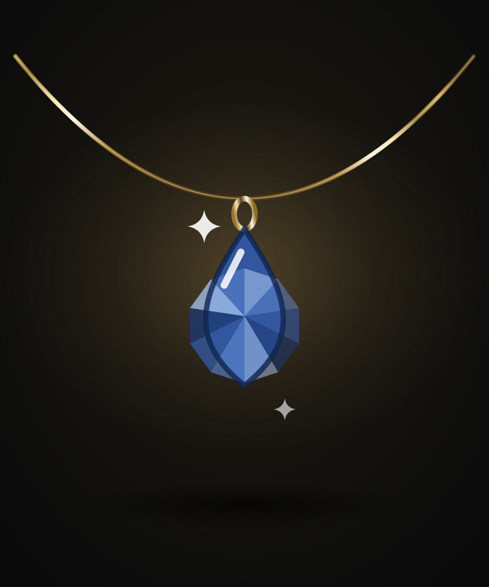
03 Colares
Peças que trabalham a distância entre o pescoço e a luz.
Safira em lapidação gota suspensa em fio de ouro amarelo.
Ouro amarelo 18k · safira 3,10 ct
R$ 24.700valor de referência
Diamante solitário em fio veneziano de ouro branco.
Ouro branco 18k · diamante 0,42 ct
R$ 9.800valor de referência
Cinco diamantes graduados sobre fio quase invisível de ouro branco.
Ouro branco 18k · 5 diamantes, 2,35 ct
R$ 41.200valor de referência
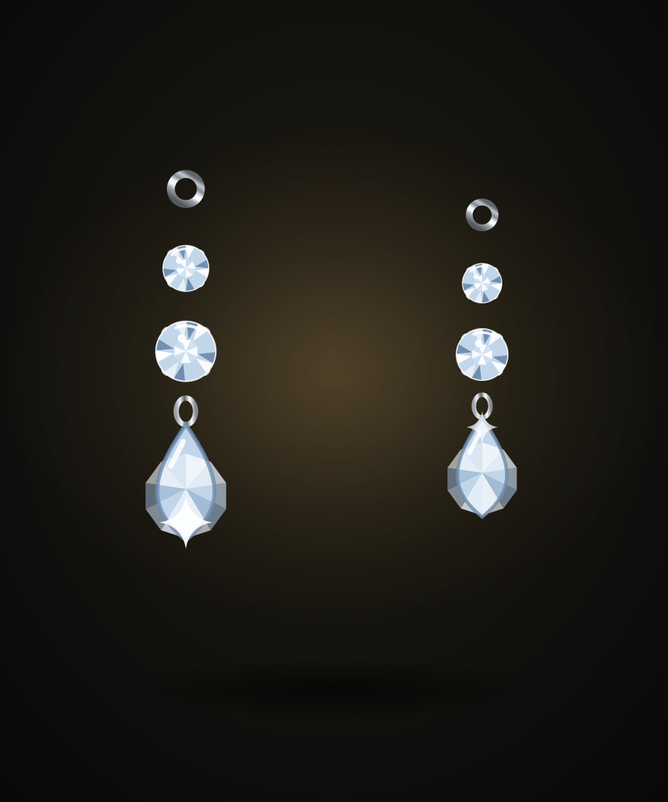
04 Brincos
O movimento da cabeça vira parte do desenho.
Par de argolas em ouro amarelo, cravejadas na face externa.
Ouro amarelo 18k · 52 diamantes
R$ 15.600valor de referência
Três diamantes em degradê terminando em gota, ouro branco.
Ouro branco 18k · diamantes 1,88 ct
R$ 21.300valor de referência
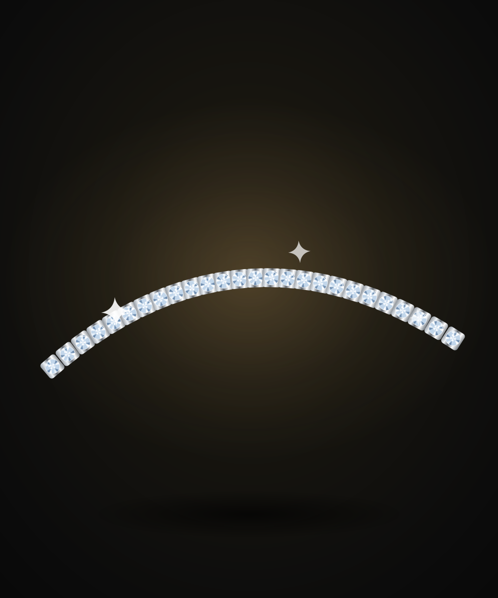
05 Pulseiras
O peso certo no pulso — a peça que você esquece que está usando.
Linha contínua de 26 diamantes calibrados em ouro branco.
Ouro branco 18k · 26 diamantes, 3,90 ct
R$ 32.500valor de referência
Aro rígido liso em ouro amarelo, sem fecho e sem ornamento.
Ouro amarelo 18k maciço
R$ 14.900valor de referência
06 Coleções especiais
Três linhas com produção limitada. Quando encerram, encerram — não refazemos tiragem.
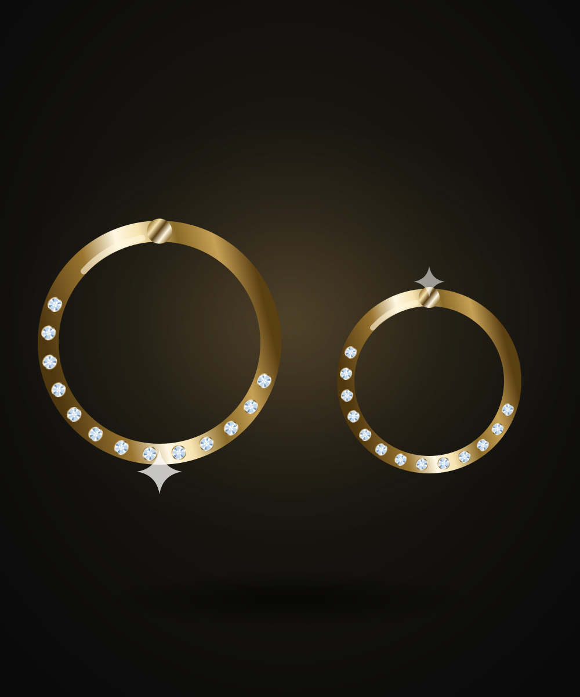
2024
Estudos sobre o primeiro reflexo do dia. Ouro amarelo polido, volumes cheios e pedras engastadas altas, para pegar a luz de longe.
2 peças nesta linha
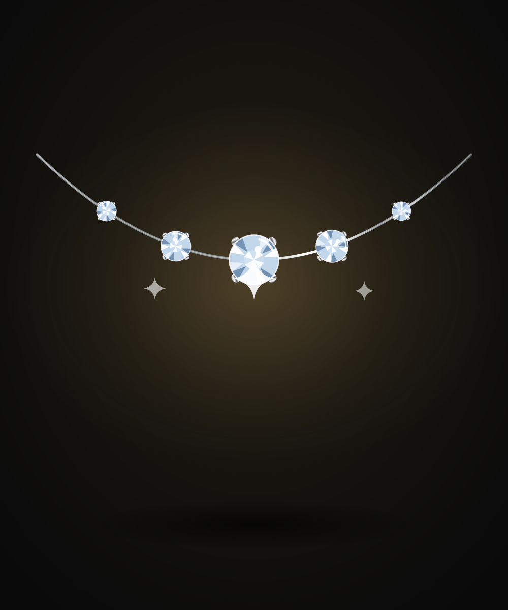
2025
Ouro branco e diamantes graduados sobre fio quase invisível. Desenhada para ser vista com pouca luz, quando só a pedra aparece.
2 peças nesta linha
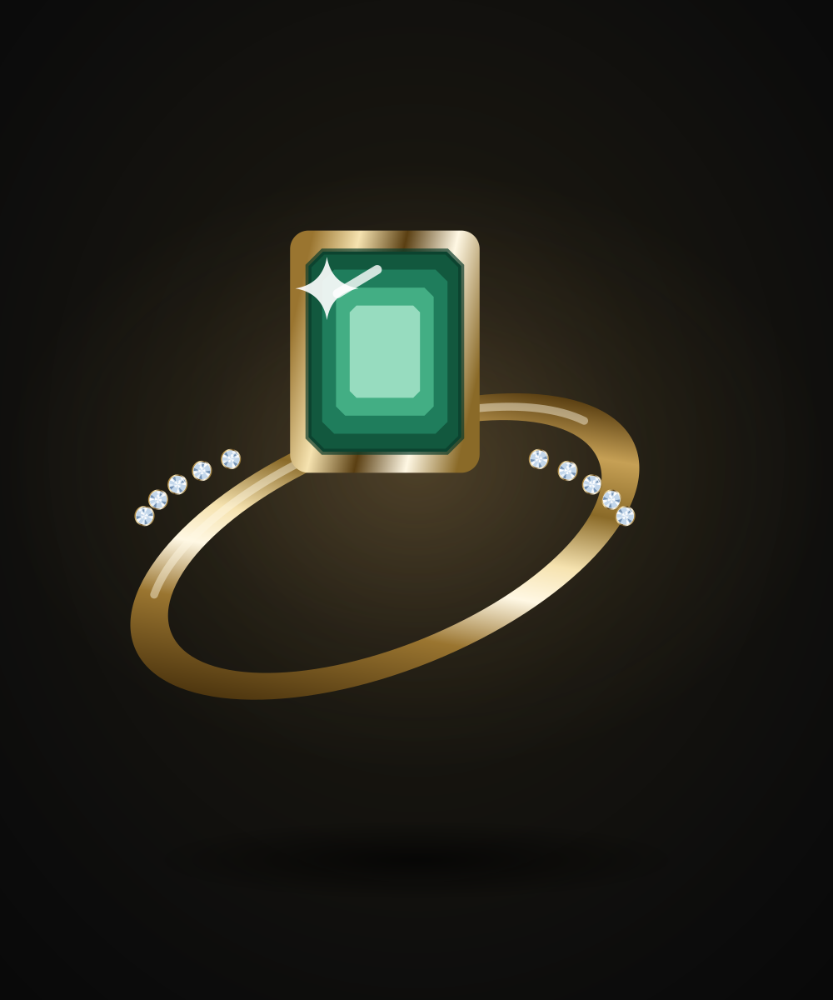
Permanente
Peças remontadas a partir de desenhos do nosso acervo. Produção limitada, cada uma com a data do croqui original.
2 peças nesta linha
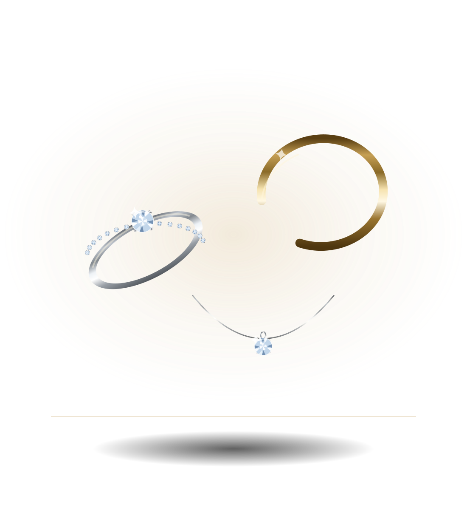
07 A marca
A AUREA começou em 2009 como uma bancada de ourives e dois pares de mãos. Não abrimos loja de rua: preferimos receber com hora marcada, com a peça em cima da mesa e tempo para conversar.
Desenhamos, fundimos, cravamos e acabamos tudo no mesmo lugar. É mais lento e é mais caro de operar — em troca, quem assina a peça é quem a fez.
08 Qualidade e autenticidade
Joia cara sem procedência é só metal caro. O que garantimos, garantimos por escrito.
Emitido por laboratório independente, com peso, cor, pureza e lapidação de cada pedra central.
Cadeia de fornecimento declarada, com nota de compra das pedras rastreável.
Toda peça sai marcada com o teor do ouro, a punção do ateliê e um número de série único.
Defeito de solda, engaste ou acabamento é nosso, sem prazo. Polimento e banho de manutenção, uma vez por ano.
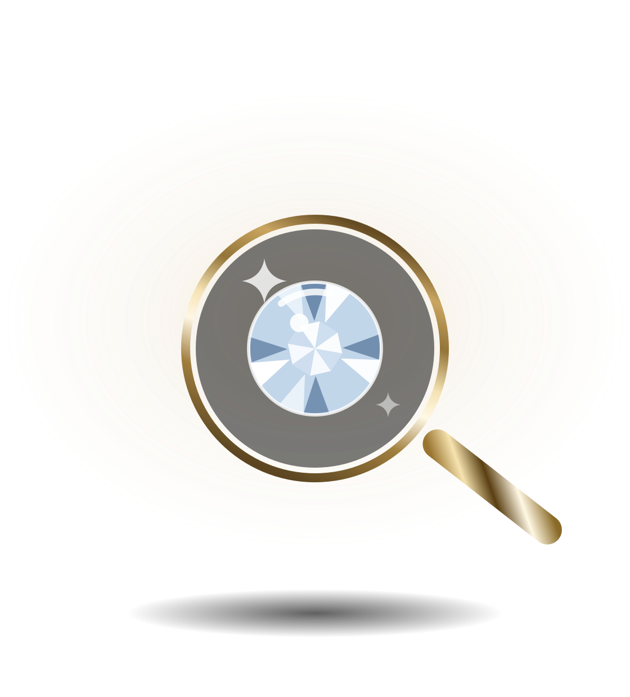
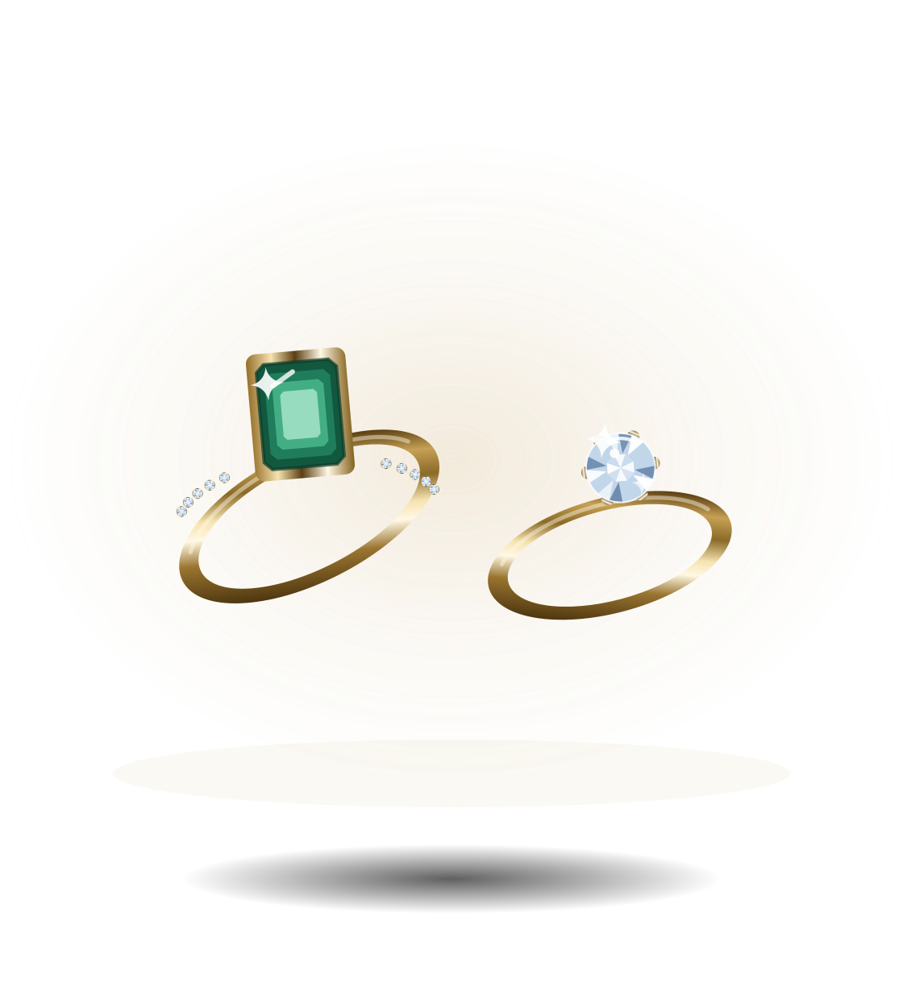
09 Atendimento personalizado
O atendimento começa por uma conversa, não por um carrinho. Você chama no WhatsApp, conta o que procura e um consultor responde — normalmente no mesmo dia útil.
Se fizer sentido, marcamos uma visita ao ateliê para provar as peças. Também atendemos por vídeo, com a joia na mão e luz de bancada, para quem está fora de São Paulo.
Você diz a ocasião, a faixa de investimento e o estilo. Sem formulário e sem cadastro.
Separamos de três a cinco peças que cabem no que você descreveu — incluindo o que ainda não está no site.
No ateliê ou por vídeo, com tempo. Ajuste de aro e gravação entram aqui.
Entrega em mãos em São Paulo ou envio assegurado para todo o Brasil, com laudo e certificado.
O WhatsApp é o nosso canal de atendimento e consulta. Nenhum pagamento é processado por ali nem por este site.
10 Instagram
Bastidores da bancada, peças recém-acabadas e croquis do acervo.
11 Perguntas frequentes
Não há checkout automático neste site. Você consulta a peça pelo WhatsApp, um consultor confirma disponibilidade, condições e prazo, e o pagamento é combinado diretamente com o ateliê — por transferência, cartão em maquininha no atendimento presencial ou link seguro emitido pelo nosso financeiro.
Os valores são de referência e acompanham a cotação do ouro e das pedras, que muda. O preço firme para a sua peça é confirmado na consulta e vale por sete dias.
Sim, e é boa parte do que fazemos. A partir de um desenho seu, de uma referência ou de uma peça da família para remontar. O processo leva de seis a dez semanas e começa com um croqui aprovado por você antes de qualquer fundição.
Não temos loja de rua nem quiosque em shopping. Recebemos no ateliê, em São Paulo, com hora marcada — assim a peça está separada e há tempo para provar com calma. Quem está em outra cidade é atendido por vídeo.
O primeiro ajuste de aro ou de comprimento é por nossa conta, em qualquer peça. Depois disso, cobramos apenas o material quando houver acréscimo de ouro.
Transporte assegurado pelo valor integral, com rastreio e entrega em mãos mediante documento. O seguro é por nossa conta e o prazo típico é de dois a cinco dias úteis depois da confirmação.
Joia é a última coisa a colocar e a primeira a tirar. Evite contato com perfume, cloro e produto de limpeza. Uma vez por ano, traga para polimento e rebanho de ródio — esse serviço é gratuito para sempre.
Vamos conversar
Conte o que você procura. Um consultor responde no mesmo dia útil, sem compromisso e sem cadastro.
Atendimento e consulta. Nenhum pagamento é processado pelo site.